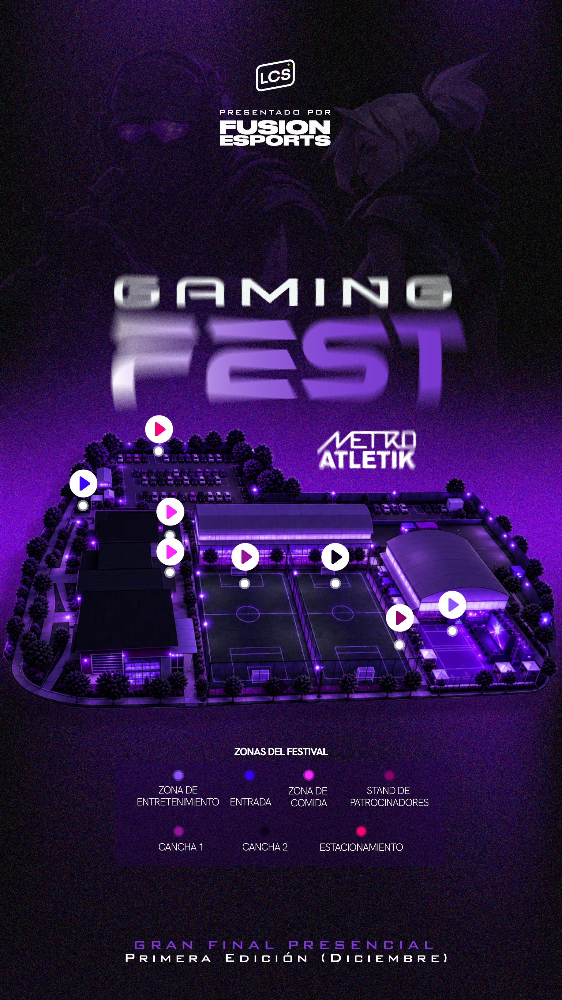

Entretenimiento
Zona dedicada a la experiencia de los asistentes.
Una experiencia que une gaming, comunidad y espectáculo.
Descubre la propuesta visual y espacial de Gaming Fest: un encuentro pensado para el entretenimiento, la competición y la conexión entre jugadores, público y marcas.

Zona dedicada a la experiencia de los asistentes.
Espacios para público, jugadores y actividades del festival.
Zona de patrocinadores y propuesta de presencia en el evento.
Esta página presenta el concepto compartido en el plano de Gaming Fest. Fechas y programación definitivas pendientes de confirmar.